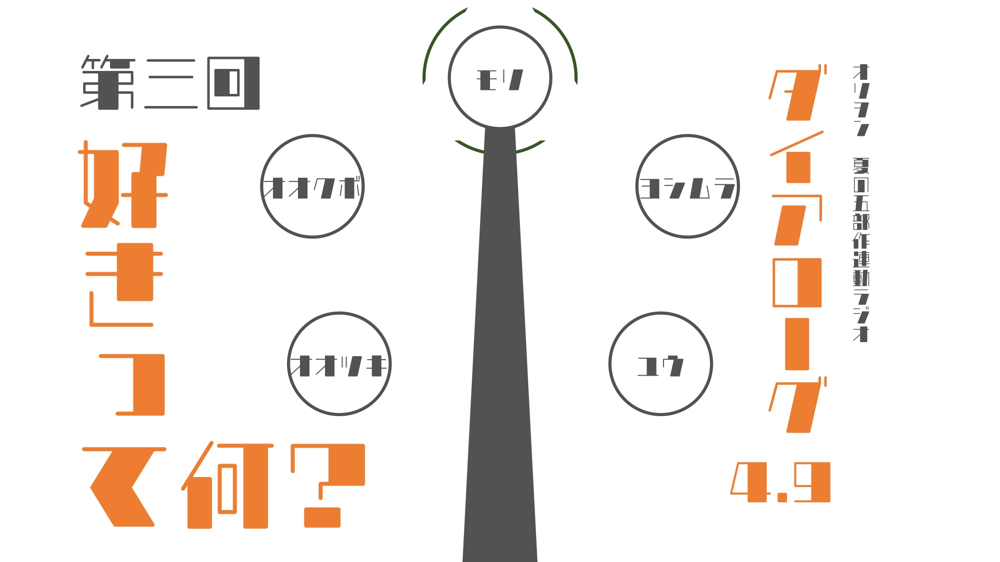
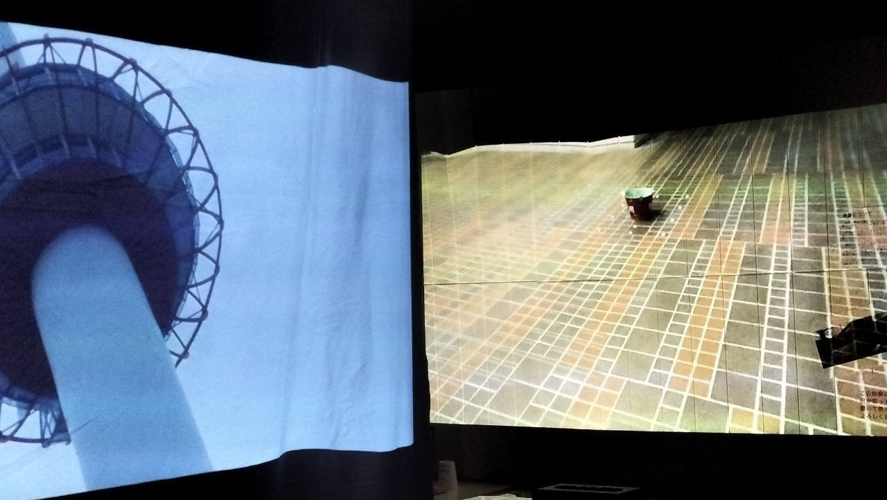
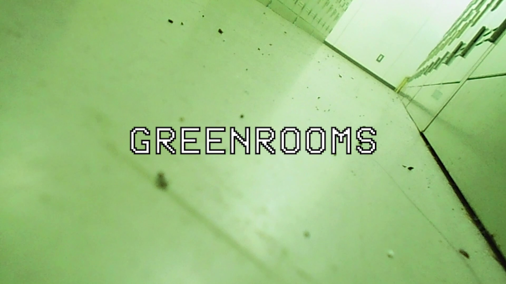
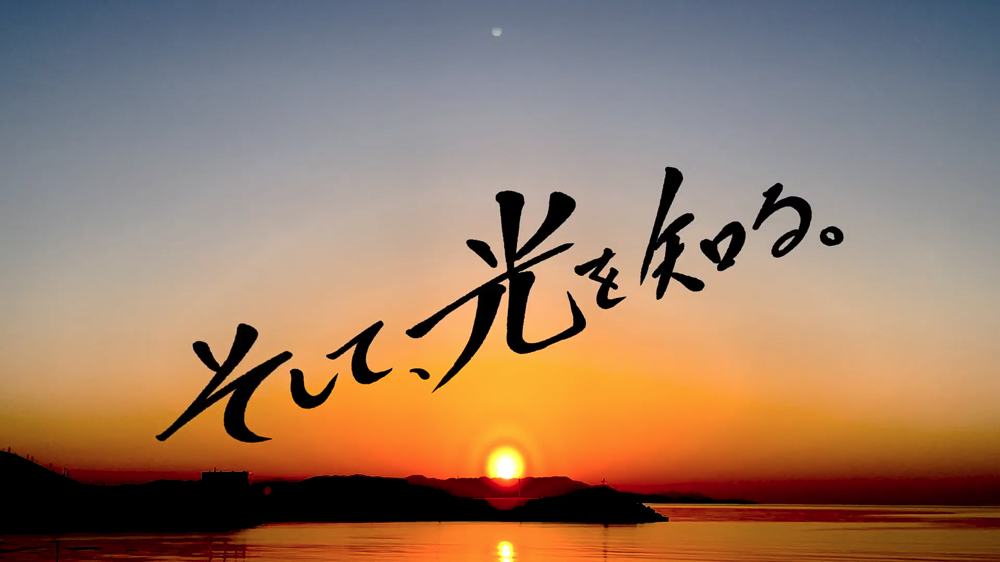
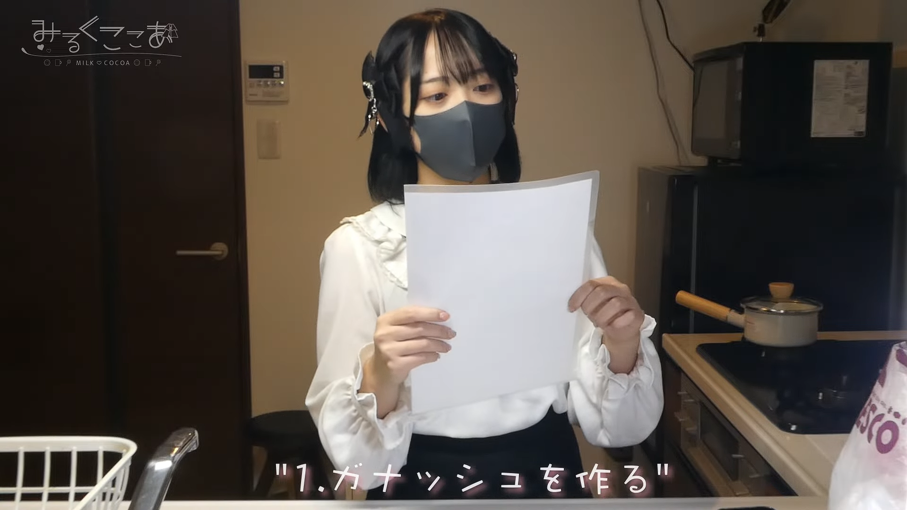
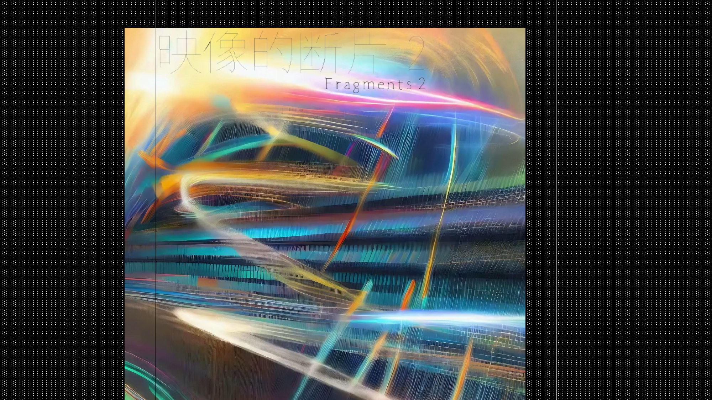
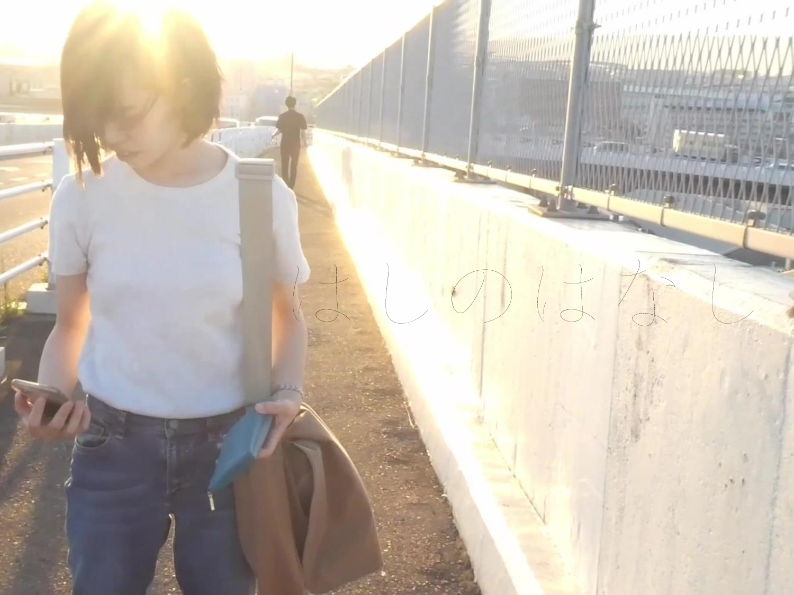
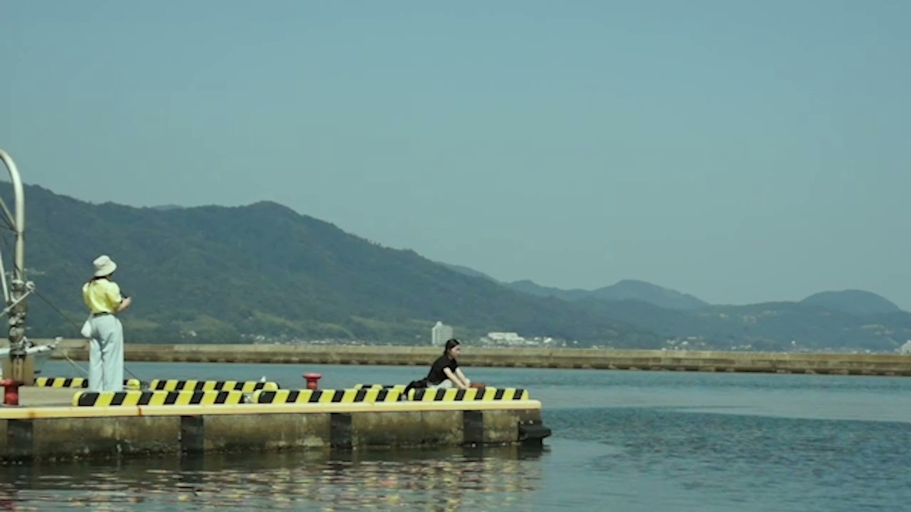
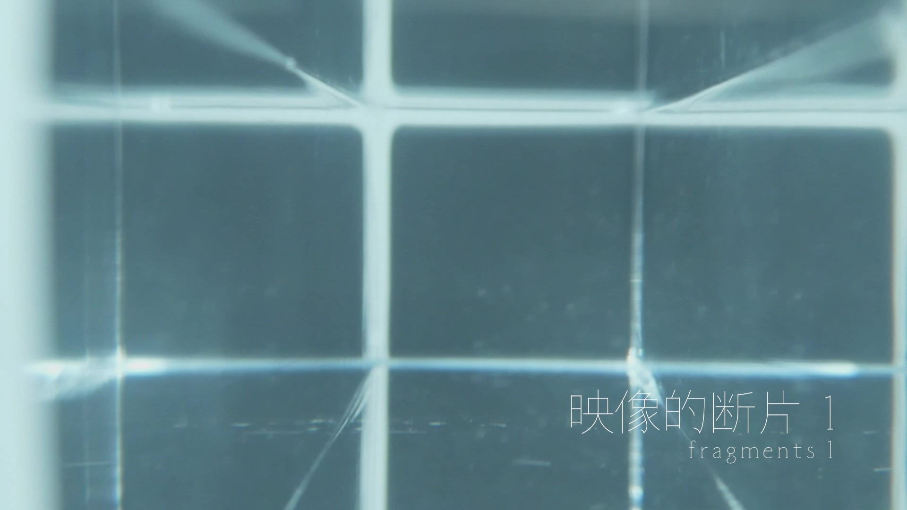
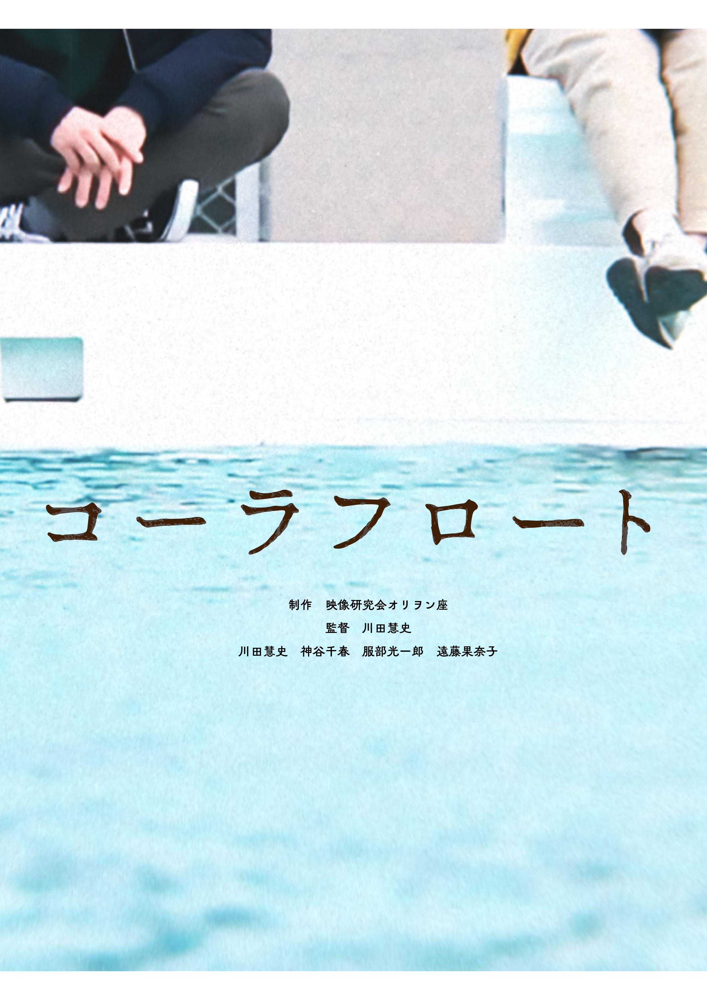

「ダイアローグ4.9」「ビデオローグス」（2023-2025）
オリヲン座での制作活動をレポートしつつ雑談する形式のラジオ「ダイアローグ4.9」と、その後続の「ビデオローグス」。企画、編集をする。

松ヶ崎祭での上映（2022-2024）
京都工芸繊維大学の学祭「松ヶ崎祭」にて、オリヲン座の作品の上映・展示をする。2022年はポスター、2023年は会場計画、2024年は展示形式に注力する。

『GreenRooms』（2024）
「Backroom」のパロディ作品。企画、撮影、編集、CGをする。設定上は制作者不明である。

森監督による一連の作品（2022-2024）
メンバーの森大樹監督による複数の短中編自主制作映画。企画、撮影、録音、照明、小道具製作、舞台美術などに少しずつ関わる。

『マカロナージュは、水の泡となる。』（2024）
インフルエンサーの内面を描く映像作品。撮影、編集アドバイスをする。

『映像的断片 2』（2023）
生成AIを利用して抽象的な光を生成し繋げた実験的な映像作品。映像研究会オリヲン座の上映会にて上映される。

『はしのはなし』（2023）
映像研究会オリヲン座での制作。原案をもとにミニマルに仕上げた実験的映像作品。監督、編集をする。同年の「スポットライト映画祭」にて上映される。

『夏へのフィルム』（2022）
映像研究会オリヲン座での制作。「記録」と「記憶」がテーマの自主制作映画。制作の進行をする。

『映像的断片 1』（2022）
映像研究会オリヲン座での制作。モノやストーリーを意図的に崩壊させた実験的な映像作品。2人で制作する。

『コーラフロート』（2022）
映像研究会オリヲン座での制作。もどかしい恋愛を描いた自主制作映画。絵コンテの作成、撮影計画、撮影、編集をする。
